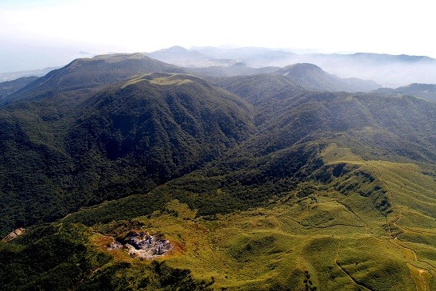

園區介紹
園區介紹
設立沿革
陽明山地區早自日治時期即為「大屯國立公園」預定地；當時範圍包括七星山、大屯山區及觀音山等地，此計畫惜因第二次世界大戰爆發而作罷。民國52年，交通部觀光事業小組曾委託臺灣省公共工程局，將陽明公園及鄰近七星山、大屯山、金山、野柳與富貴角等北部濱海地區，合併規劃為「陽明國家公園」，面積約28,400公頃，惟因當時尚無國家公園法而擱置。
直至民國70年，經何應欽將軍之提議，並由有關單位研究推動，於74年正式公告實施陽明山國家公園計劃，並於同年9月16日及翌年3月13日先後成立國家公園管理處及警察隊，積極推展各項經營管理業務。
地理位置景觀與範圍面積
大屯火山群
陽明山國家公園位處臺北盆地北緣，東起磺嘴山、五指山東側，西至向天山、面天山西麓，北迄竹子山、土地公嶺，南迨紗帽山南麓，面積約11,338公頃。行政區包括臺北市士林、北投部份山區，及新北市淡水、三芝、石門、金山、萬里等區之山區；海拔高度自200公尺至1,120公尺範圍不等。
四季風情
陽明山國家公園因受緯度及海拔之影響，氣候分屬亞熱帶氣候區與暖溫帶氣候區，且季風型氣候極為明顯。
春季2、3月，陽明山上天氣乍暖還寒，冬天的茶花、梅花陸續凋謝，山櫻、杜鵑、華八仙、臺北堇菜、山寶鐸、烏皮九芎等緊接登場，高大的喬木也抽出嫩芽，紅、粉、白、黃、綠……繽紛的色彩一掃隆冬的陰霾、單調，而將大地粧點得分外動人。夏季在西南季風的吹拂下，午後偶有雷陣雨，霧雨初晴時，山區常可見「虹橋跨立山谷」的景緻，使雨後的陽明山更加亮眼。
當秋季來臨的10月份，白背芒形成一片隨風搖曳的花海；稍晚，楓紅點綴枝頭，樹葉片片金黃，交織成一幅盛名遠播的「大屯秋色」。冬季時因受東北季風影響，陽明山區經常寒風細雨，低溫高濕，雲霧瀰漫，別具一番景緻；若遇強烈寒流來襲，七星山、竹子山、大屯山一帶偶可見白雪紛飛，成為瑞雪覆蓋的銀白世界。